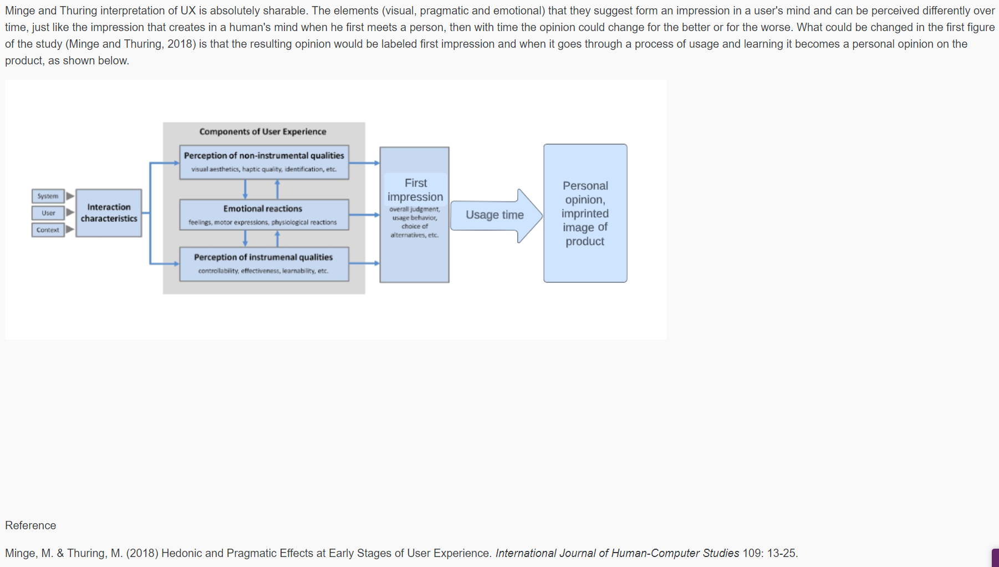

Unit 1
First module started with the introduction to Project management principles and history, explaining the differences between traditional project management and software engineering project management. Project management has been a practiced discipline for many years but in my opinion it got a fast development in the software era. As usual we start the module with a peer collaborative discussion about the fail history of big projects and the reasons behing, I'll leave below my contribution.
Based on the analysis presented by Lehtinen et al. (2014), the three most common reasons for project failure are communication issues, inadequate project management practices, and unclear requirements. Communication issues can arise from a lack of communication among project stakeholders or from miscommunication and misunderstandings. Inadequate project management practices can lead to delays, cost overruns, and quality problems, while unclear requirements can result in software that does not meet user needs or expectations. One example of a software project failure caused by communication issues is the FBI's Virtual Case File (VCF) project. The project was aimed at developing a modern case management system for the FBI, but it was eventually canceled after spending over $100 million due to communication breakdowns between project stakeholders, including the FBI and its contractor. The lack of clear communication and alignment of expectations led to delays, cost overruns, and ultimately the project's failure. Another example of a software project failure caused by inadequate project management practices is the Denver International Airport baggage handling system project. The project was aimed at developing a fully automated baggage handling system for the airport, but it suffered from a series of project management issues, including scope creep, insufficient testing, and lack of stakeholder involvement. These problems led to a delay of over a year and cost overruns of over $1 billion, ultimately resulting in the system's failure to meet its objectives (Callem Consulting, 2004). Lehtinen, T., Sormunen, J., & Saarelainen, T. (2014). Perceived causes of software project failures – An analysis of their relationships. Journal of Systems and Software, 97, 115-134. [Accessed: 06/05/23] Callem Consulting. (2008). Case Study – Denver International Airport Baggage Handling System – An illustration of ineffectual decision making . https://www5.in.tum.de/~huckle/DIABaggage.pdf Jack T. Marchewka (2010). The FBI Virtual Case File: A Case Study. Available at: https://scholarworks.lib.csusb.edu/cgi/viewcontent.cgi?referer=&httpsredir=1&article=1132&context=ciima [Accessed: 07/05/23]
Unit 2, 3 and 4
In unit 2 and 3 we kept the collaborative discussion going and thanks to the responses on out initial posts we added a summary post in week 4:
Summary post Thank you for the replies. Starting with Michael's question the two most common strategies for communication are regular team meetings and effective communication tools. Regular team meetings: Regular team meetings provide an opportunity for project team members to gather, share information, discuss progress, and address any concerns or issues. These meetings can enhance intra-team communication and collaboration. They serve as a platform to update team members on project status, clarify goals and objectives, and facilitate effective decision-making (Robbins & Coulter, 2016). Effective communication tools: Utilizing appropriate communication tools can improve both intra and extra business communications. These tools facilitate real-time discussions, document sharing, and task tracking, promoting efficient intra-team communication. Moreover, they enable seamless communication with external stakeholders, such as clients, suppliers, or other project teams, facilitating effective extra-business communication (Zhang et al., 2017). Also, a too hierarchical structure inhibits efficient communication preventing certain stakeholders to communicate directly with the involved party. It is true, as the size of the project increases the likelihood of it failing grows. I agree the issue is probably not a lack of skill as Wang mentioned. As the project size grows, it also becomes more difficult to understand the root causes of any issue making it almost impossible to understand what is the root cause for a failure. Also with the introduction of microservices the general complexity decreased substantially, monolithic architectures are difficult to understand and maintain. Robbins, S. P., & Coulter, M. (2016). Management. Pearson Education. Zhang, J., Zeng, J., Sun, X., & Chen, K. (2017). The effects of communication tools on team performance: A meta-analysis. International Journal of Information Management, 37(2), 75-87.
There is also a formative activity to include in this E-portfolio which is: Read Dicheva & Hodge (2018). Think about an online system which you use on a daily basis. Consider how it might operate at the back-end using data structures. Here is some thoughts:
Formative activity unit 3 here
Unit 5
In unit 5 we start a new very interesting discussion. It is about the factors affecting user experience. We start from the Minge and Thuring paper about user experience and elaborate an alternate version that takes into consideration time. Here is my initial contribution:
Unit 6
In unit six we do some coding, which is always appreciated. A session about testing, specifically testing in python with pytest which will help us for our second assignment. Talking about assignments in this week is due the first assignment, it was a group project based on the development of a project plan following agile methodology on a realistic scenario. It was one of the most fun project I had and really enjoyed the time spent. The team worked well and the collaborative tools in google really helped (thanks google).
Unit 7 and 8
In unit seven we continue the collaborative discussion answering our peers replies and questions. Here is my summary post with the cited questions:
Thanks everyone for the replies. I'll divide my answers in chronological order 1/3 - The model is still relevant. A greater emphasis in those cases is given to the initial product, when customers buy these new technologies they expect to work better than traditional ones or there would be no point in paying an additional price to buy them. Therefore a more polished product is necessary from the beginning. That said, a product that gets better over time would be appreciated and will overcome competitors that don't put as much effort into it. In the case of impaired users, since they have no choice other than utilize these types of products, different reasoning comes into play. This customer will choose the product that works the best out of the box and is more reliable instead of one that gets better over time with the possibility of this not happening. 2 - It is challenging to represent the nature of interactions of UX elements as they can change in importance depending on the user involved. The elements remain the same but with time personal preferences can become an even greater factor. I.E. a user that prefers functionalities over simplicity can overcome bad UI while developing familiarity with a product if the advantage in functionalities is worth it. We might say time accentuates the differences in personal opinion on the product.
We also had a formative activity about the possible data structures used in applications we use everyday. Probably our most used apps are social networks, which are also the most impressive when it comes to data storage and retrieval. One example of an online system that relies on data structures is a social networking platform. To illustrate its back-end operation, we can discuss two commonly used data structures: graphs. Graphs can represent relationships between entities in the social networking platform. Each user account can be considered as a node, and connections between users (such as friendships or followers) can be represented as edges. Graphs facilitate efficient retrieval of information like a user's friends, mutual connections, or recommended connections. Algorithms like breadth-first search (BFS) or depth-first search (DFS) can be applied to traverse the graph efficiently. There is an amazing article on how twitter achieved this here.
Unit 10
Unit 10 reflection on the differences between old software qualities articles and recent ones:
Focus: Older articles may emphasize traditional quality assurance techniques such as testing and defect detection,
while more recent articles may explore broader aspects of software quality, including continuous integration, continuous delivery, and DevOps practices.
Automation and tooling: With the proliferation of automation and specialized tools, modern articles may discuss the role of test automation frameworks, code analysis tools, and continuous integration/continuous deployment (CI/CD) pipelines in ensuring software quality.
Security and privacy: Given the growing concern for security and privacy in software systems, contemporary articles might address topics like secure coding practices, threat modeling, vulnerability scanning, and privacy by design.
Reference for modern articles: Alebeisat, Farhan & Alhalhouli, Zaid & Alshabatat, Tamara & Alrawashdeh, T.I.. (2018). Review of Literature on Software Quality. 8. 32-42.
Reference for older articles: Jim A. McCall Paul K. Richards Cene F. Walters (1977) FACTORS IN SOFTWARE QUALITY Concept and Definitions of Software Quality General Electric company.
Unit 11 and 12
I reserved this space in the portfolio for the reflection about the team project and team work Since these are the weeks of last submission and the team experience is over.